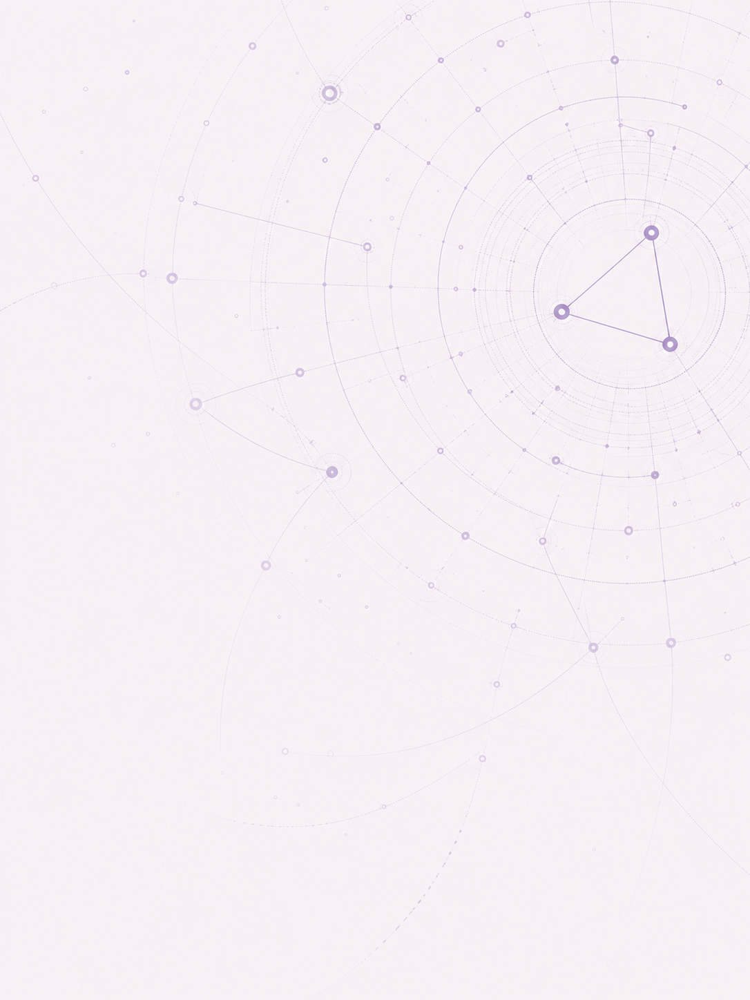

Complete-plan learning
The bots evaluate coherent openings, aggression, economy, technology, and army compositions instead of learning isolated choices.
Adaptive game AI
Protoss, Terran, and Zerg StarCraft 2 bots that develop strategies, learn opponents, and analyze replays.

The system
Battencruiser, Zacling, and Protodd share a confidence-aware architecture while exploring race-specific strategies. Their results are learned as coherent plans, so a strong component does not receive credit for a weak overall build.
What makes it adaptive
The bots evaluate coherent openings, aggression, economy, technology, and army compositions instead of learning isolated choices.
Scouting and match history shape responses to proxies, one-base attacks, air threats, and familiar player tendencies.
A flight recorder ranks failure modes such as supply blocks, passive armies, mineral float, or being out-teched, with concrete fixes.
Open source